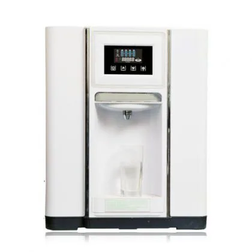
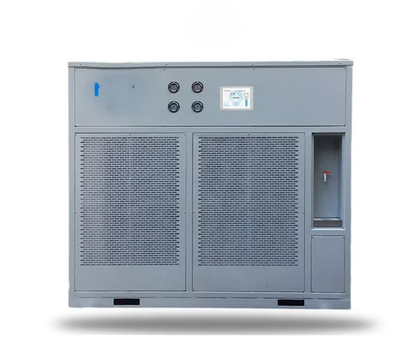
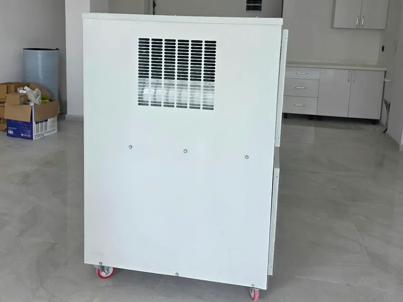
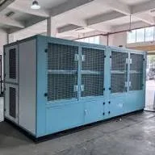
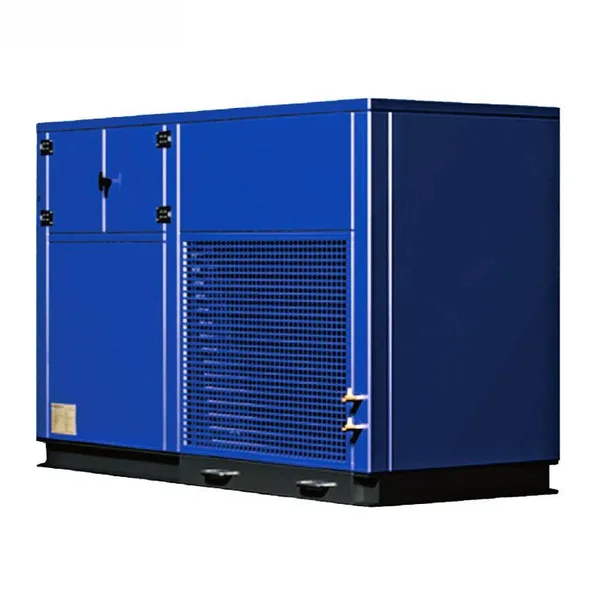
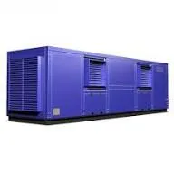
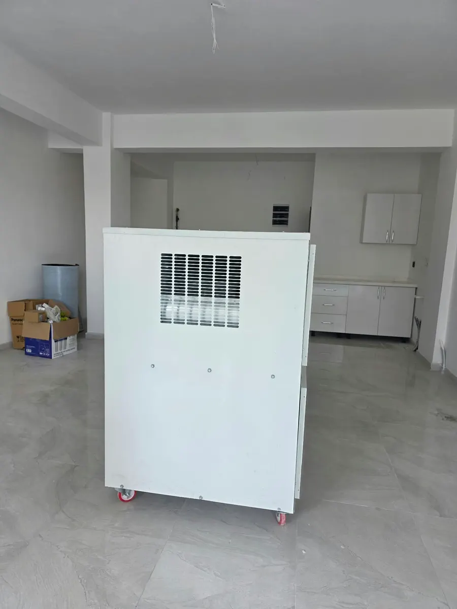

AWG-20
20 L / gün
Villa ve müstakil evler
Teklif AlAnkara, Türkiye • AWG Teknolojisi
AEROMEK atmosferik su üreticileri havadaki nemi yoğuşturur, 7 kademeli RO + UV-C ile arıtır. Şebeke suyuna ihtiyaç duymadan günde 20 – 1000 litre içilebilir su.
Teknoloji
Havadaki nemden bardağınıza dört adım.
Ortam havası güçlü bir fanla cihaza çekilir. Hava debisi modele göre 3.000 m³/h'e kadar çıkar.
R410A soğutkanlı, Panasonic kompresörlü soğutma devresi havayı çiy noktasının altına indirir; nem suya dönüşür.
Yoğuşan su 7 kademeli ters ozmoz (RO) filtrasyonundan geçer, UV-C ile sterilize edilir.
Hijyenik tankta saklanır. Otomatik defrost ve dolu depo koruması ile musluktan taze su alınır.
Modeller
Ev tipinden endüstriyel ölçeğe 6 kapasite. İhtiyacınıza uygun modeli seçin, teklif alın.

20 L / gün
Villa ve müstakil evler
Teklif Al
50 L / gün
Küçük işletmeler, ofisler
Teklif Al
100 L / gün
Ticari tesisler, oteller
Teklif Al
250 L / gün
Fabrika ve şantiye
Teklif Al
500 L / gün
Büyük işletmeler
Teklif Al
1000 L / gün
Endüstriyel ölçek, afet bölgeleri
Teklif AlKişi sayısını ve kişi başı günlük ihtiyacı girin; önerilen modeli görün.
Teknik Föy
Tanıtımdaki AWG-100 modelinin değerleri. Diğer modellerin teknik föylerini teklif formundan isteyebilirsiniz.
| Günlük su üretimi | 100 L'ye kadar* |
|---|---|
| Hava debisi | 3.000 m³/h |
| Soğutkan | R410A |
| Kompresör | Panasonic 3 HP scroll |
| Elektrik beslemesi | 3~400 V, 50 Hz |
| Su arıtma | 7 kademeli RO + UV-C |
| Kontrol | Dijital LCD ekran |
| Güvenlik | Otomatik defrost, dolu depo koruması |
* Üretim miktarı ortam sıcaklığına ve bağıl neme bağlıdır. Sıcak ve nemli havada artar, soğuk ve kuru havada düşer.

Neden AEROMEK?
Su hattı olmayan her yerde, yalnızca elektrikle çalışır.
Şişe su ve tanker taşımasına gerek bırakmaz, plastik atığı azaltır.
7 kademeli RO filtrasyonu ve UV-C sterilizasyon.
Endüstriyel komponentler, Ankara merkezli teknik servis.
SSS
Evet. Yoğuşan su 7 kademeli ters ozmoz (RO) filtrasyonundan geçirilir ve UV-C ile sterilize edilerek hijyenik tankta saklanır.
Ortam sıcaklığı ve bağıl nem belirleyicidir. Bağıl nem %40'ın üzerindeyse ideal üretim alınır; soğuk ve kuru havada üretim düşer. Model kapasiteleri üst sınırı gösterir.
Günlük su ihtiyacınızı kişi sayısı ve kullanım amacına göre hesaplayın, iklim koşulları için pay bırakın. Model seçiciyi kullanabilir ya da bize bölgenizi ve ihtiyacınızı yazabilirsiniz; uygun modeli birlikte belirleyelim.
Tüketim model, sıcaklık ve neme göre değişir. Teklifle birlikte bulunduğunuz bölgenin iklimine göre tahmini tüketimi ve litre başı maliyeti bildiriyoruz.
Cihaz iyi havalanan bir alana yerleştirilir ve elektriğe bağlanır; su hattı gerekmez. AWG-100 için 3~400 V trifaze besleme gerekir. Diğer modellerin besleme bilgisi teklifte yer alır.
Periyodik filtre değişimi ve otomatik tank temizliği yeterlidir. Ankara merkezli teknik servisimizle bakım desteği veriyoruz.
Formu gönderdikten sonra talebiniz numaralandırılır ve aynı gün içinde size dönüş yapılır.
İletişim
Formu doldurun; talebiniz numaralandırılarak bize iletilir ve WhatsApp üzerinden de hızlıca ulaşabilirsiniz.
{kind=link}
{kind=link}
{kind=link}